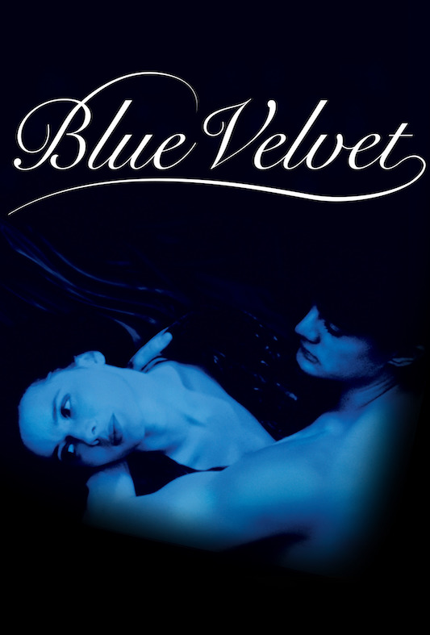
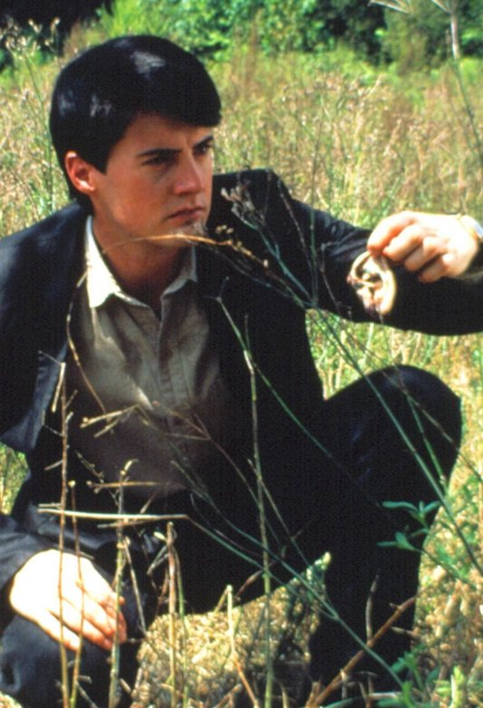
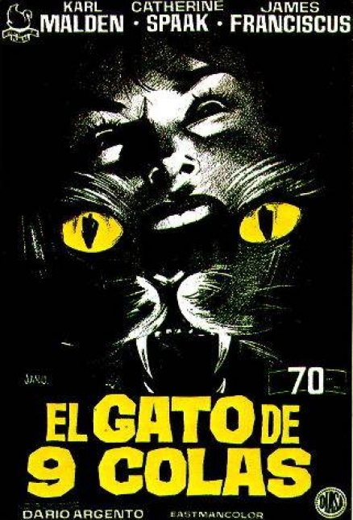
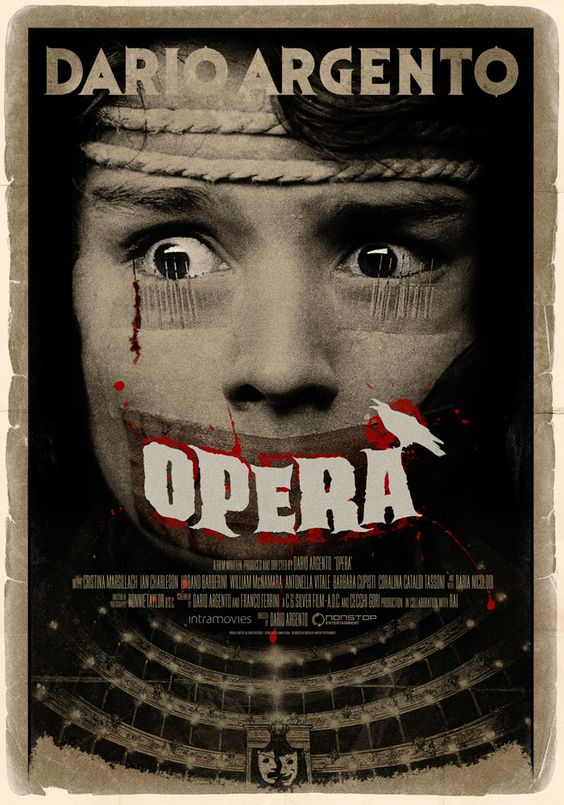
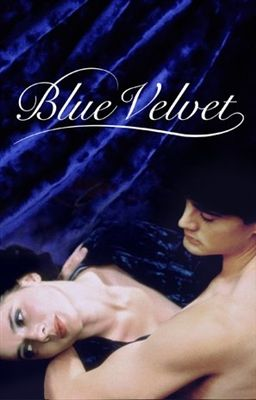
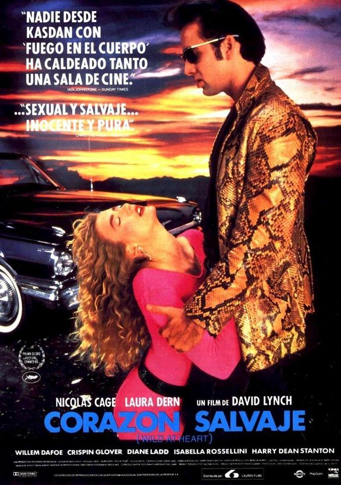

cineclub nocturna
¡ vuelve la alegría !
El Cine Club Nocturna nació como un espacio para la memoria cinéfila,
enteramente dedicado al Cine Fantástico en cualquiera de sus formas:
series de televisión, animación, cine de terror, ciencia ficción, suspenso.
Un ciclo que desde 1994 viene dedicando un espacio al cine fantástico con
una particularidad: el rescate de la proyección en fílmico.
Dialoguemos acerca de la falta de políticas de restauración y conservación en torno
al material fílmico, aquí no hay un patrón, cada año es diferente, no hay
políticas de restauración y no forma parte de la cultura.
NOV 12
viernes 22hs.
El Gato de las Nueve Colas
EL GATO DE LAS NUEVE COLAS (Il gatto a nove code, Darío Argento, 1971). Con Karl Malden y James Franciscus.
Una noche, mientras vuelven a casa, Franco Arno, ciego de nacimiento, y su sobrina Lori son testigos de una siniestra discusión entre un ladrón y un chantajista, que acaba en asesinato. A pesar de su invalidez, Franco colaborará con el periodista Carlo Giordani para desentrañar el misterio que se oculta tras una enrevesada trama de espionaje industrial y crímenes brutales.
NOV 12
viernes 00hs.
Terror en la Opera
TERROR EN EL ÓPERA (Opera, 1987). Con Cristina Marsillach, Ian Charleson, Urbano Barberini.
A Betty (Cristina Marsillach), una joven cantante de ópera, le ofrecen la oportunidad de debutar como protagonista en el "Macbeth" de Verdi, al sufrir un accidente la cantante principal. La obra tiene fama de maldita y, de hecho, empiezan a producirse, en torno a Betty, una serie de extrañas muertes que vendrían a confirmar tal superstición.
NOV 26
viernes 22hs.
Terciopelo Azul
TERCIOPELO AZUL (Blue Velvet, 1986). Con Isabella Rossellini, Kyle MacLachlan, Dennis Hopper, Laura Dern.
Una mañana, Jeffrey Beaumont (Kyle MacLachlan), después de visitar a su padre en el hospital, encuentra entre unos arbustos una oreja humana. La guarda en una bolsa de papel y la lleva a la comisaría de policía, donde le atiende el detective Williams (George Dickerson), que es vecino suyo. Comienza así una misteriosa intriga que desvelará extraños sucesos acontecidos en una pequeña localidad de Carolina del Norte.
NOV 26
viernes 00hs.
Corazón Salvaje
CORAZÓN SALVAJE (Wild At Heart, 1990). Con Nicolas Cage, Laura Dern, Willem Dafoe, Harry Dean Stanton.
Durante un permiso carcelario, Sailor va a ver a su novia Lula y ambos deciden huir a California. La madre de la chica, que se opone a esta relación, se pone en contacto con un mafioso para que elimine a Sailor. En realidad, quiere deshacerse de él porque el joven presenció cómo ella y su amante asesinaban a su marido. La huida de Sailor y Lula va acompañada de turbios acontecimientos y sórdidos recuerdos.
Cineclub Nocturna cumplió 25 años y lo festejó con la proyección de Nosferatu, 1922 y música en vivo.
DAVID LYNCH • WERNER HERZOG • TINTO BRASS • NICHOLAS MAYER • PETER MONOOGIAN • TOBE HOOPER • SAM RAIMI • DAVID CRONENBERG • RICHARD WENK • MICK GARRIS • DARIO ARGENTO • PAUL BERTEL • BOB DAHLIN •